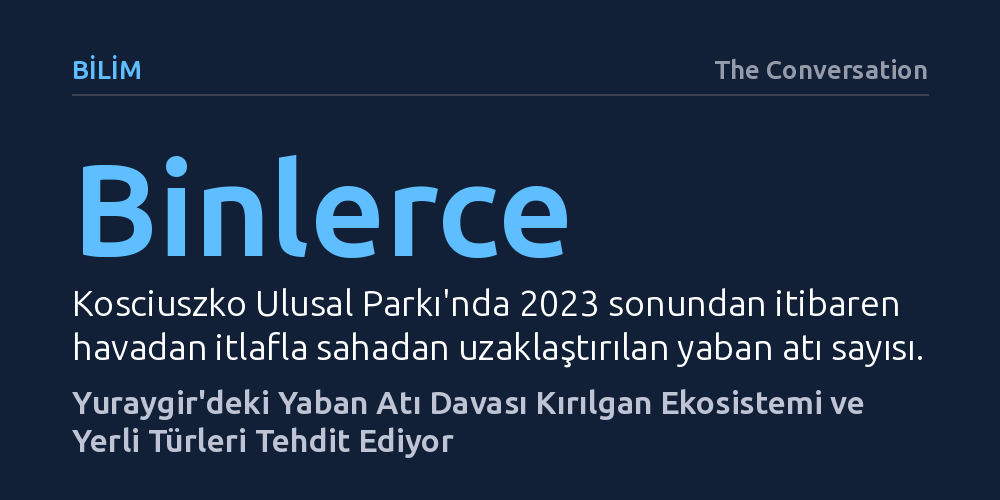

BILIM · The Conversation · 2026-09-08
Avustralya'da yaban atı itlafının mahkemece durdurulması, Yuraygir Ulusal Parkı'ndaki nesli tehlikedeki kurbağa ve kıyı kuşlarının yaşam alanlarını doğrudan tehdit ediyor. Bilimsel veriler, küçük istilacı popülasyonlara erkenden müdahale edilmediğinde ekolojik yıkımın hızla geri dönülemez boyuta ulaştığını gösteriyor.
Kültürel sembol haline gelmiş türlerin romantikleştirilerek korunmasının, evrimsel olarak toynaklılara uyum sağlamamış kırılgan ekosistemlerde geri döndürülemez bir yok oluşa yol açabileceğini gösteriyor.

Avustralya popüler kültüründe şiirlerden sinemaya kadar geniş yer bulan ve 'brumby' olarak anılan yaban atları, toplumun bir kesimi için kültürel mirasın simgesi sayılırken ekologlar için büyük bir çevre tehdidi oluşturuyor. Yeni Güney Galler'in kuzey kıyısında yer alan Yuraygir Ulusal Parkı'ndaki küçük yaban atı popülasyonu, bu çatışmanın merkezinde yer alan kritik bir yargı sürecine konu oldu. Hayvan hakları savunucuları mahkemeye başvurarak Milli Parklar ve Vahşi Yaşam Servisi'nin parktaki atları havadan ve karadan vurarak ya da tuzak kurarak itlaf etme yetkisi bulunmadığını öne sürdü.
Mahkeme operasyonların yasa dışı olduğuna dair nihai bir karar vermemiş olsa da, kurum bürokratik onay süreçlerini gözden geçirene kadar tüm itlaf çalışmalarını geçici olarak askıya almayı kabul etti. Yönetim planı gereği yerli bitki örtüsünü korumak ve istilacı türleri temizlemekle yükümlü olan park idaresi duruşma sonucunu beklerken, sahadaki gecikme kırılgan ekosistem üzerindeki baskıyı artırıyor.
Avustralya kıtası evrimsel tarihi boyunca büyük ve sert toynaklı memelilere ev sahipliği yapmamış son derece narin bir ekolojik yapıya sahiptir. Yuraygir'in kıyı lagünleri, tatlı su bataklıkları ve tuzlu sazlıkları gibi sulak alanları, atların ağır gövdeleri ve sert toynakları altında hızla ezilip sıkışmaktadır. Toprağın sıkışması su tutma kapasitesini bozmakta, erozyonu hızlandırmakta ve berrak su kaynaklarını çamur deryasına çevirerek sığ havuzları kullanılamaz hale getirmektedir.
Bu fiziksel tahribat, yaşamı doğrudan bu sulak alanlara bağlı olan tehlike altındaki yerli canlıları uçuruma sürüklüyor. Yeşil ve altın çan kurbağası ile wallum kurbağacığı gibi kritik türler, üreme ve barınma için ihtiyaç duydukları bitki örtüsünü kaybediyor. Tehdit amfibilerle de sınırlı kalmıyor; kumsallarda ve zemin çöküntülerinde yuva kuran küçük sumru ve alacalı istiridyepulcun gibi kıyı kuşlarının yumurtaları ile yavruları, sürü halinde dolaşan atların toynakları altında ezilme tehlikesiyle karşı karşıya bulunuyor.
Yaban atlarının öldürülerek kontrol altına alınması, hayvan refahı kaygıları nedeniyle kamuoyunda tilki veya yaban domuzu gibi diğer istilacı türlerin itlafına kıyasla çok daha sert tepkilerle karşılaşıyor. Karşıt gruplar takip sırasındaki stres ve ölümcül olmayan yaralanma risklerini öne sürse de, Kosciuszko Ulusal Parkı'ndaki son operasyonları inceleyen bağımsız veterinerlik değerlendirmeleri, sıkı kurallarla yürütülen havadan itlaflarda hiçbir refah ihlaline rastlanmadığını ortaya koyuyor.
Öte yandan mahkemenin getirdiği geçici durdurma kararı yalnızca atları değil, parktaki yabandomuzu, geyik ve tilki kontrolünü de sekteye uğrattı. Bu durum at tartışmasının gölgesinde kalan çok daha büyük bir yıkıma kapı aralıyor. Özellikle tilkiler, parkın simgelerinden olan kıyı emusu yavruları ve kıyıda yuva yapan nadir kuşlar üzerinde ölümcül bir av baskısı kurarak ekolojik çöküşü hızlandırıyor.
Yuraygir'deki at sayısının henüz az olması ilk bakışta kontrolün acil olmadığı izlenimi verebilir. Ancak ekoloji bilimi küçük ve belirli bir alana sıkışmış istilacı popülasyonları erken aşamada kontrol etmenin, geniş coğrafyalara yayılmış devasa sürülerle mücadele etmekten hem katbekat ucuz hem de çok daha kolay olduğunu gösteriyor. Müdahalenin gecikmesi hayvanların hızla üremesine ve coğrafi etki alanlarını genişletmesine yol açıyor.
Avustralya Alpleri'ndeki Kosciuszko Ulusal Parkı bu konuda çarpıcı bir ders barındırıyor. Bölgede 2023 sonundan bu yana binlerce yaban atı sahadan uzaklaştırılmış olsa da, zamanında kararlı adımlar atılmadığı için popülasyon yüksek kalmaya ve çevre arazilerden park içine sızmaya devam ediyor. Yuraygir'de aynı trajedinin tekrarlanmaması için yargının atların romantik imajı yerine sahadaki somut ekolojik verileri gözetmesi gerekiyor.